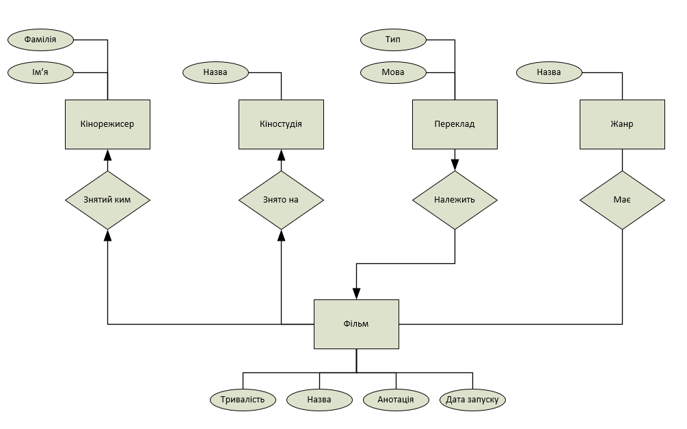

Інфологічна модель:

- Фільм має тільки одного кінорежисера. Кінорежисер може мати де-кілька фільмів. Отже багато до одного.
- Фільм має тільки одного кіностудія. Кіностудія може мати де-кілька фільмів. Отже багато до одного.
- Переклад належить тільки одному фільму. Фільм може мати де-кілька перекладів. Отже один до багатьох.
- Фільм може мати де-кілька жанрів. І можуть бути де-кілька фільмів одного жанру. Отже багато до багатьох.